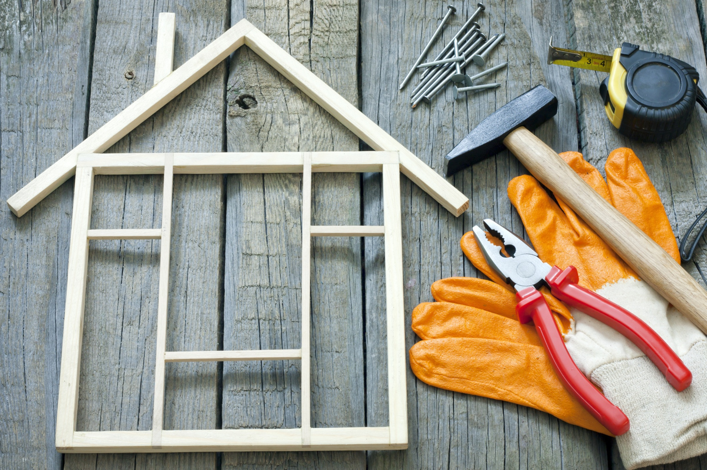
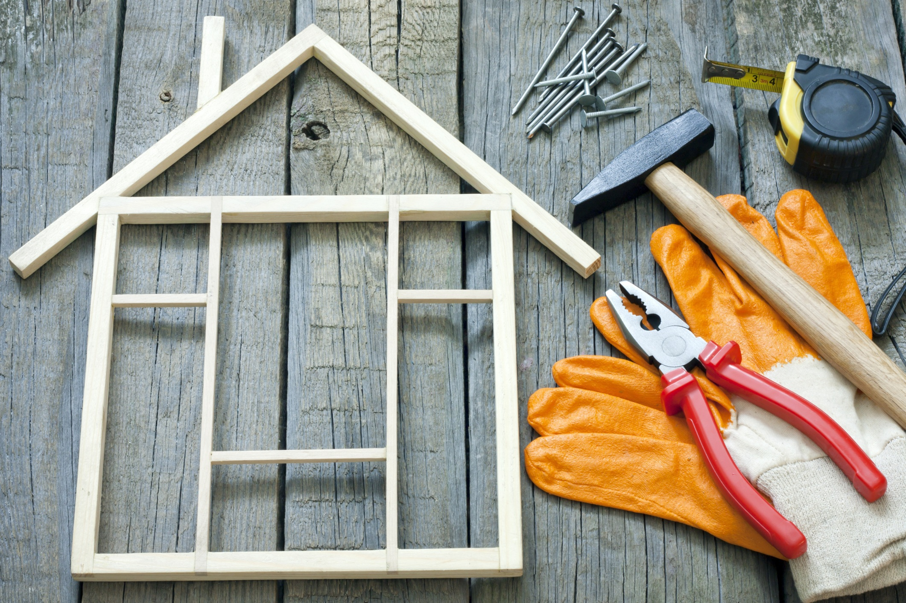

Извършваме строителни услуги за гр.Варна и Областта
Търсите качествени строителни и ремонтни услуги за вашето жилище? Ние предлагаме цялостни решения – от груб строеж до довършителни работи и интериорни ремонти. Работим бързо, прецизно и с гаранция за качество. Доверете се на опитен екип с множество доволни клиенти.
Свържете се с нас днес и превърнете дома си в мечтаното място!
Ще получите БЕЗПЛАТНА ОФЕРТА след извършен оглед на място в срок от 48 часа.
Използваме само висококачествени материали и съвременни технологии за постигане на дълготрайни резултати. Без скрити такси и с ясни срокове – при нас всичко е прозрачно и професионално.
Цялостен и частичен ремонт
Извършваме цялостен или частичен ремонт на жилища, жиллищни блокове, офиси, магазини, къщи, козирки и тераси. Предлагаме висококачествени строителни и ремонтни решения, строителни услуги за гр.Варна и Областта
Работим както по индивидуални проекти, така и по стандартни решения според нуждите на клиента. Предлагаме безплатен оглед и професионална консултация на място. Независимо от обема на проекта, подхождаме с внимание към всеки детайл.
Боядисване
Интериорно боядисване
Предлагаме професионално интериорно боядисване с прецизно изпълнение и безупречен завършек на стени, тавани, врати, прозорци, парапети, радиатори и первази. Работим чисто, бързо и с внимание към всеки детайл, за да освежим и преобразим вашето пространство.
Екстериорно боядисване
Извършваме качествено екстериорно боядисване с устойчиви на атмосферни условия бои и покрития. Гарантираме дълготраен резултат и естетичен външен вид за фасади, огради, тераси и други външни повърхности.
Боядисване на мебели
Предлагаме боядисване и освежаване на дървени и метални мебели с професионални бои и техники. Възвръщаме оригиналния вид или придаваме напълно нов стил според вашите предпочитания.
Саниране и хидроизолация
Ние предлагаме професионално саниране и хидроизолация на сгради – топлоизолация, подмяна на дограма и модерна фасадна визия. С нашите решения намалявате сметките за енергия и повишавате комфорта у дома. Доверете се на опита ни за дълготрайна защита и обновен облик на вашата сграда.
Инвестиция в качество, която се изплаща с години! Работим бързо, надеждно и с гарантирано високо качество на изпълнението. Свържете се с нас днес и направете първата крачка към по-икономичен и модерен дом!
Допълнителни услуги
Фаянс и теракот
Извършваме цялостен и частичен ремонт на бани и санитарни помещения.Полагаме фаянс, теракот и гранитогрес на коридори, общи помещения и тераси.
Тапети
Отстраняване на стари тапети и полагане на нови такива. Лепене на фолио и декоративни елементи.
Други услуги
Предлагаме монтаж на первази, монтаж на окачени тавани, монтаж и демонтаж на мебели, монтаж на ламинат, монтаж на винил, полагане на саморазливна замазка, обръщане на врати и прозорци. ВиК и Ел.услуги.
Шпакловане на тавани и стени, външно и вътрешно полагане.